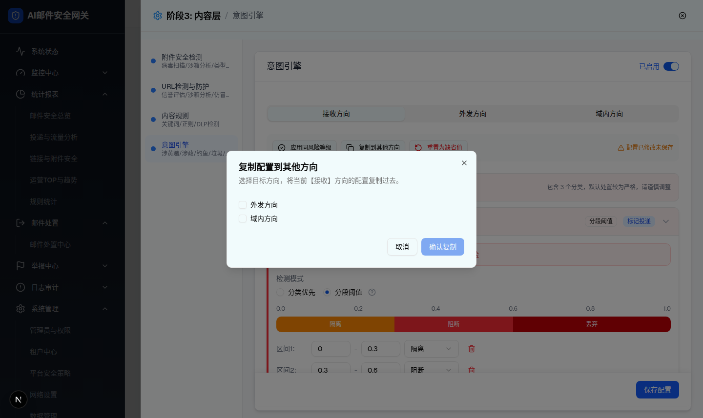
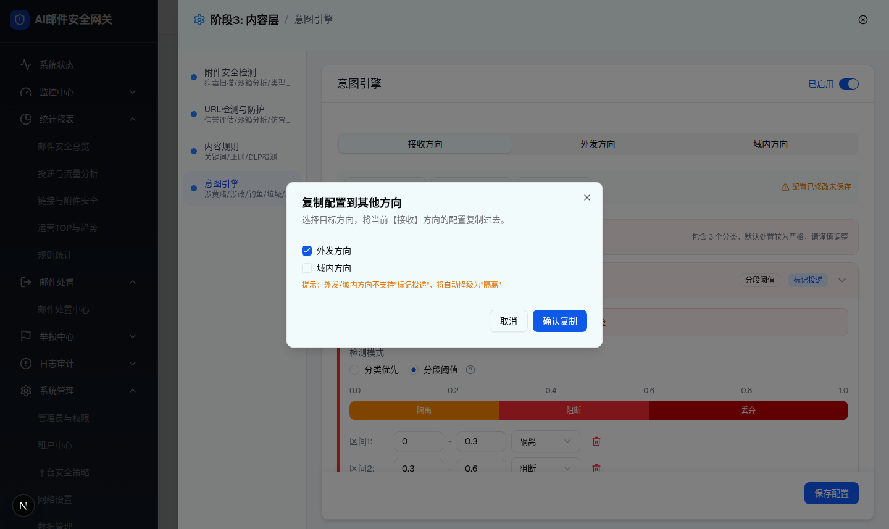
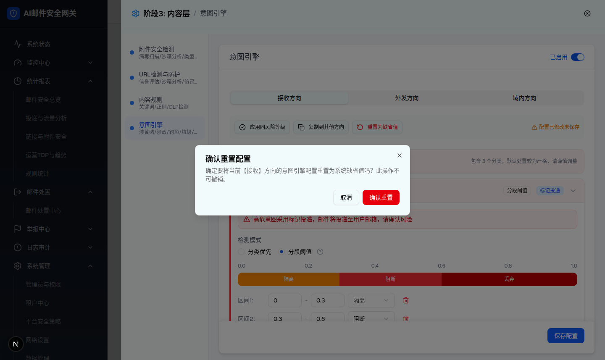

| 所属组件 | 2.2 全局操作栏 →「复制到其他方向」/「重置为缺省值」（intent-engine-module.tsx renderDialogs） |
| 主文件 | index.html |
| 触发路径 | 层级0 全局操作栏 → 点击对应按钮 → Radix Dialog（居中 + 黑色半透明遮罩） |
| 浏览器验证 | 复制对话框默认「确认复制」disabled（实测 disabled=true）；勾选「外发方向」后启用，且出现琥珀色降级提示「提示：外发/域内方向不支持"标记投递"，将自动降级为"隔离"」（仅当前方向=接收时渲染）。重置对话框文案含当前方向名【接收】与「此操作不可撤销」，按钮为 取消 / 确认重置（destructive），右上有 Radix 默认 Close 关闭钮。 |



| 对话框 | 元素 | 文案/默认值 | 交互行为（浏览器验证） |
|---|---|---|---|
| 复制配置到其他方向 | 标题/描述 | 「复制配置到其他方向」/「选择目标方向，将当前【接收】方向的配置复制过去。」 | 方向名随当前 Tab 动态替换（接收/外发/域内） |
| 目标方向 Checkbox | 列出除当前方向外的 2 个方向，默认全不勾选 | 勾选/取消维护 copyTargets 数组 | |
| 降级提示 | 「提示：外发/域内方向不支持"标记投递"，将自动降级为"隔离"」琥珀色 | 仅 当前方向=接收 且 已勾选≥1 个目标 时渲染 | |
| 取消按钮 | outline | 关闭对话框并清空已勾选目标（setCopyTargets([])） | |
| 确认复制 | 主按钮，默认 disabled | 勾选≥1 启用；点击后深拷贝当前方向配置到各目标方向（接收→外发/域内时 classificationAction 与各区间 action 的 mark_deliver 全部替换为 quarantine），关闭对话框并标记未保存 | |
| 确认重置配置 | 标题/描述 | 「确认重置配置」/「确定要将当前【接收】方向的意图引擎配置重置为系统缺省值吗？此操作不可撤销。」 | 方向名动态替换 |
| 取消按钮 | outline | 仅关闭对话框 | |
| 确认重置 | destructive 红色 | 当前方向配置恢复 createDefaultIntentEngineConfig() 对应方向缺省值，关闭对话框并标记未保存（其他方向不受影响） | |
| 应用同风险等级（无对话框） | 全局操作栏按钮 | 默认 disabled；展开某意图卡后启用（实测 disabled false） | 点击立即将展开卡配置深拷贝到同风险等级其他意图，无确认弹窗、无成功反馈（建议落地补 Toast） |
| 比对项 | demo 实际 DOM | 提取的 HTML 预览 | 是否一致 |
|---|---|---|---|
| 复制对话框根节点 | 新增 [role=dialog]（叠加在抽屉 dialog 之上）+ 黑色半透明遮罩 | .overlay > .dialog[role=dialog] | 一致 |
| 复选框 | 2 个 [role=checkbox]：#copy-send、#copy-internal，初始 data-state=unchecked；勾选后 checked（实测） | 2 个 checkbox 同 id 语义 | 一致 |
| 确认复制 disabled | 默认 disabled=true；勾选后 false（实测） | 同逻辑 | 一致 |
| 降级提示条件渲染 | 默认不渲染；勾选外发方向后出现（实测文案一致） | 同条件显示 | 一致 |
| 重置对话框按钮 | 3 个 button：取消 / 确认重置 / Close(右上 X)（实测文本与顺序） | 取消 / 确认重置 / ✕ | 一致 |
| 关闭行为 | Radix Dialog：ESC 与遮罩点击可关闭；取消清空勾选 | 预览支持 ✕/取消/确认关闭，遮罩点击关闭 | 一致（ESC 未复刻，预览以按钮为准） |